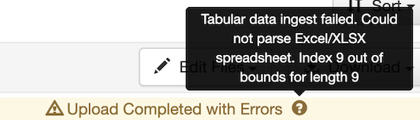

Glossary of Icons & Symbols¶
Email - Envelope Icon¶

Email recipient depends on context of where the envelope appears. On Dataverse pages, the email goes to UVA Libra Data Support (libra@virginia.edu)
If you are viewing a personal dataset, then the email will go to the dataset contact, in many cases, the dataset creator.

Dataverse & Dataset Symbols¶
When looking at search results, you will find the following symbols:
 Dataverse symbol - Dataverses display this symbol inclosed in a “red” box.
Dataverse symbol - Dataverses display this symbol inclosed in a “red” box.
 Dataset symbol - Datasets display this symbol enclosed in a “blue” box.
Dataset symbol - Datasets display this symbol enclosed in a “blue” box.
 Linked Dataset - Datasets that are linked from another local dataverse display this symbol. Linked datasets can be found when searching either of the dataverses (one published in and one that it is linked to).
Linked Dataset - Datasets that are linked from another local dataverse display this symbol. Linked datasets can be found when searching either of the dataverses (one published in and one that it is linked to).
 Harvested Dataset - Metadata records that have been harvested from other Dataverses, such as Harvard, Odum Institute, plus others. Harvested metadata records are searchable as other records in Libra Data. Clicking on a harvested dataset takes the user to the original repository.
Harvested Dataset - Metadata records that have been harvested from other Dataverses, such as Harvard, Odum Institute, plus others. Harvested metadata records are searchable as other records in Libra Data. Clicking on a harvested dataset takes the user to the original repository.
Search Icons¶
 Search icon at the top of the page. Use to search within all dataverses.
Search icon at the top of the page. Use to search within all dataverses.
There are other search boxes that are context dependent.

If you are in a dataverse, the search box with the “Find” icon, will search within the current dataverse and osther sub dataverses. If the current dataverse is the top-level, then all sub dataverses will be searched.
If you are in a dataset, the search box with the “Find” icon, will search within the current dataset.
Asterisks¶
 Metadata fields that are required have an asterisk next to the field name.
Metadata fields that are required have an asterisk next to the field name.
Sharing Datasets¶

To share a dataset on your favorite social media networks. Click the “share” icon (seen above). You can only share datasets that have been published. You can share on Facebook, Twitter or Google+ by clicking on the following icons respectively 
Depending on browser configuration and add ons, you may only see the color icons like the following:  . These color icons correspond to the colors in the previous image.
. These color icons correspond to the colors in the previous image.
Publish Datasets¶

When you publish a dataset, you make it available to the public so that other users can browse or search for it. Note: UVA depositors MUST acknowledge the following before a dataset can be published:
- You have the legal right and authorization to make the data publicly available online world-wide through Libra.
- In preparing the data for public archiving and distribution, you have removed any confidential or sensitive information, student education records protected under FERPA, and all information that personally identifies any individual or that contains any information classified as highly sensitive under state or federal law, or UVA policy.
- If the submission is based upon work that has been sponsored or supported by an agency or organization other than UVA such as the National Institutes of Health, the National Science Foundation, or a private sponsor or funder, you represent that you have fulfilled any right of review, confidentiality, or other obligations required by that contract or agreement.
- You represent that you have made a reasonable effort to ensure that the data contained in your submission is accurate.
- You represent that you have appropriately acknowledged other researchers whose work contributed to the data.
Tabular Data Ingest¶
Files in certain formats - Stata, SPSS, R, Excel(xlsx) and CSV - may be ingested as tabular data. Files that are recognized as tabular data and not flagged can be used in applications integrated with Dataverse.
If dataverse considers your file “tabular” it will try to convert the raw data content extracted from such files in plain text, TAB-delimited files. If there is a problem, your files will still be uploaded, but you will see the following icon next to those files:

Hovering over the warning icon displays detailed information, such as: 
Once the dataset is published, this symbol is not seen by the public. The owner of the data file will still see the icon.